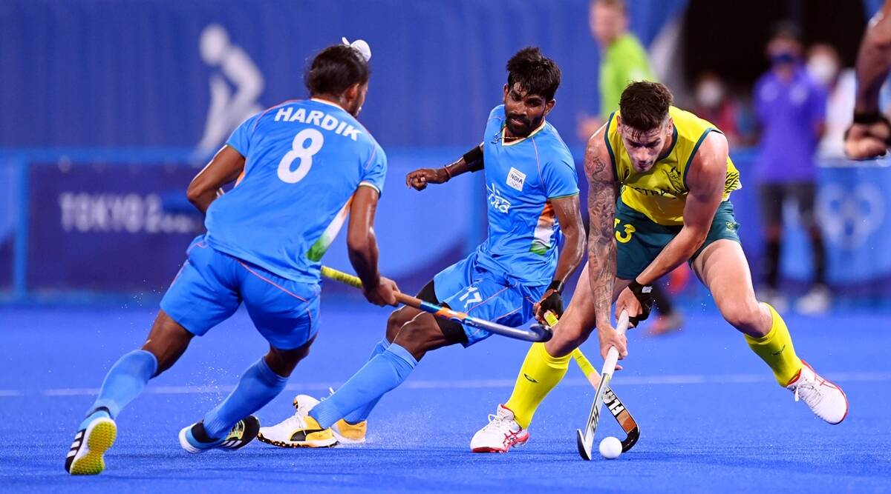
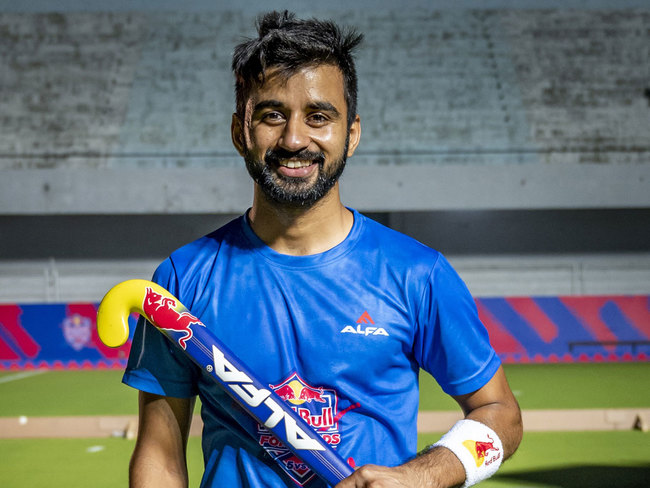
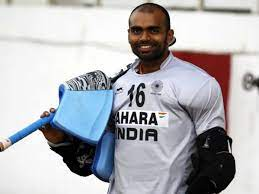
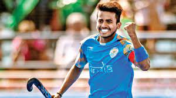
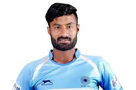
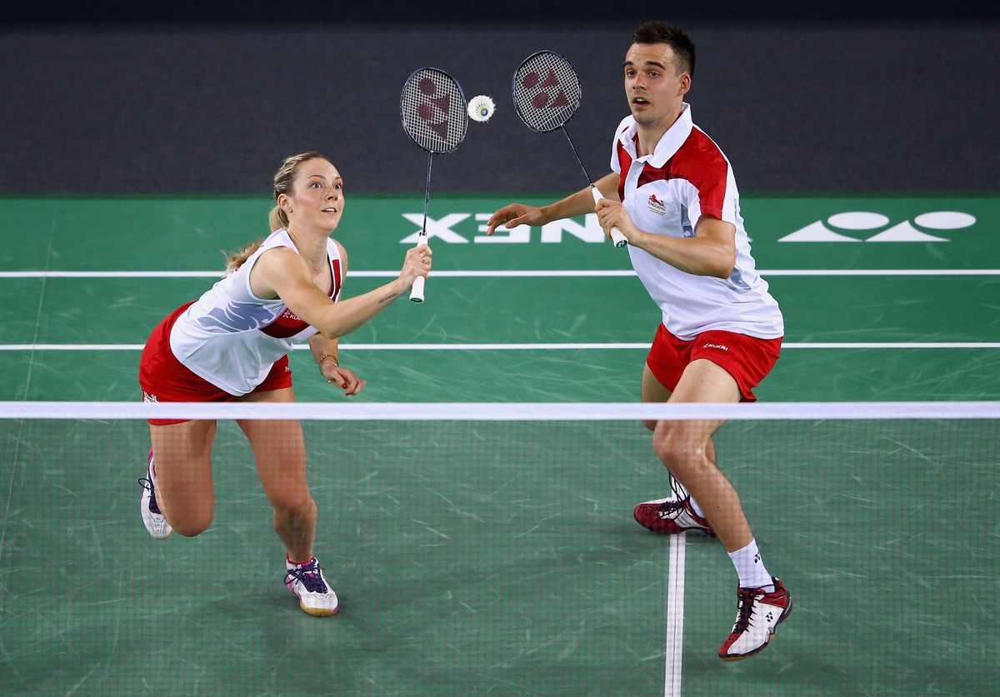
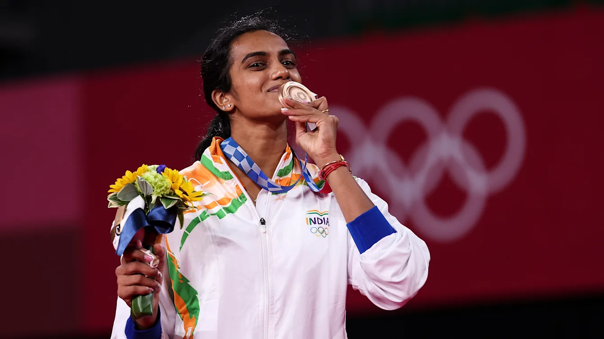
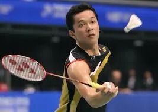
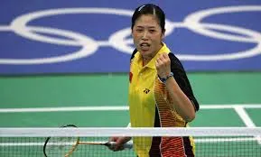
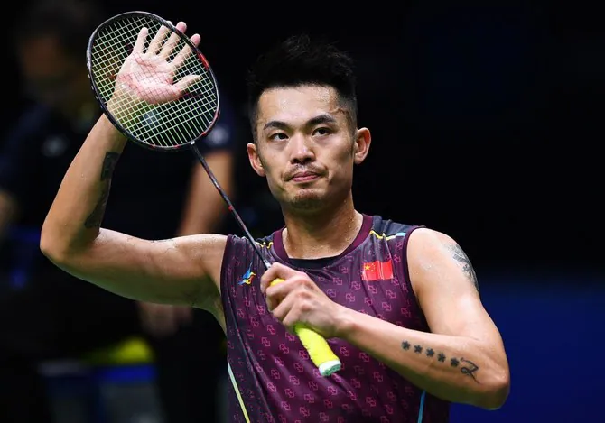

Football also called association football or soccer, game in which two teams of 11 players, using any part of their bodies except their hands and arms, try to maneuver the ball into the opposing team’s goal. Only the goalkeeper is permitted to handle the ball and may do so only within the penalty area surrounding the goal. The team that scores more goals wins. Football is the world’s most popular ball game in numbers of participants and spectators. Simple in its principal rules and essential equipment, the sport can be played almost anywhere, from official football playing fields (pitches) to gymnasiums, streets, school playgrounds, parks, or beaches. Football’s governing body, the Fédération Internationale de Football Association (FIFA), estimated that at the turn of the 21st century there were approximately 250 million football players and over 1.3 billion people “interested” in football; in 2010 a combined television audience of more than 26 billion watched football’s premier tournament, the quadrennial month-long World Cup finals. |
|  | Field hockey, also called Hockey, outdoor game played by two opposing teams of 11 players each who use sticks curved at the striking end to hit a small, hard ball into their opponent’s goal. It is called field hockey to distinguish it from the similar game played on ice. Hockey is believed to date from the earliest civilizations. The Arabs, Greeks, Persians, and Romans each had their own versions, and traces of a stick game played by the Aztec Indians of South America have been found. Hockey can also be identified with other early games, such as hurling and shinty. During the Middle Ages a French stick game called hoquet was played, and the English word may be derived from it. Hockey began to be played in English schools in the late 19th century, and the first men’s hockey club, at Blackheath in southeastern London, recorded a minute book in 1861. Teddington, another London club, introduced several major variations, including the ban of using hands or lifting sticks above the shoulder, the replacement of the rubber cube by a sphere as the ball, and most importantly, the adopting of a striking circle, which was incorporated into the rules of the newly founded Hockey Association in London in 1886. |
|  Manpreet |
 Rejesh |
 Vivek |
 Surender |
Table tennis, also known as ping-pong and whiff-whaff, is a racket sport derived from tennis but distinguished by its playing surface being atop a stationary table, rather than the court on which players stand. Either individually or in teams of two, players take alternating turns returning a light, hollow ball over the table's net onto the opposing half of the court using small rackets until they fail to do so, which results in a point for the opponent. Play is fast, requiring quick reaction and constant attention, and is characterized by an emphasis on spin relative to other ball sports, which can heavily affect the ball's trajectory. Owed to its small minimum playing area, its ability to be played indoors in all climates, and relative accessibility of equipment, table tennis is enjoyed worldwide not just as a competitive sport, but as a common recreational pastime among players of all levels and ages. Table tennis has been an Olympic sport since 1988,[3] with event categories in both men's and women's singles, and men's and women's teams since replacing doubles in 2008. Table tennis is governed by the International Table Tennis Federation (ITTF), founded in 1926, and specifies the official rules in the ITTF handbook. ITTF currently includes 226 member associations worldwide. |
 |
 WANG Chuqin |
 FAN Zhendong |
 Suh Hyowon |
 Adriana Diaz |
|  | Badminton is a racquet sport played using racquets to hit a shuttlecock across a net. Although it may be played with larger teams, the most common forms of the game are "singles" (with one player per side) and "doubles" (with two players per side). Badminton is often played as a casual outdoor activity in a yard or on a beach; formal games are played on a rectangular indoor court. Points are scored by striking the shuttlecock with the racquet and landing it within the other team's half of the court. Each side may only strike the shuttlecock once before it passes over the net. Play ends once the shuttlecock has struck the floor or ground, or if a fault has been called by the umpire, service judge, or (in their absence) the opposing side. The shuttlecock is a feathered or (in informal matches) plastic projectile that flies differently from the balls used in many other sports. In particular, the feathers create much higher drag, causing the shuttlecock to decelerate more rapidly. Shuttlecocks also have a high top speed compared to the balls in other racquet sports. The flight of the shuttlecock gives the sport its distinctive nature. The game developed in British India from the earlier game of battledore and shuttlecock. European play came to be dominated by Denmark but the game has become very popular in Asia, with recent competitions dominated by China. In 1992, badminton debuted as a Summer Olympic sport with four events: men's singles, women's singles, men's doubles, and women's doubles;[2] mixed doubles was added four years later. At high levels of play, the sport demands excellent fitness: players require aerobic stamina, agility, strength, speed, and precision. It is also a technical sport, requiring good motor coordination and the development of sophisticated racquet movements. |
|  P V Sindhu |
 Taufikh Idayat |
 Gao Ling |
 Lindon |